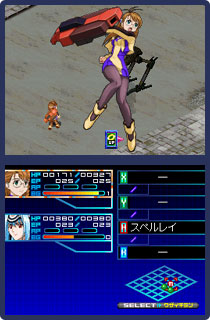

|  |
まず驚かされるのが物語の持つスケールの大きさです。ゲームスタート直後に登場するのは21世紀のアフリカ大陸にあるケニア。そして、そこから一気に4000年後の未来へ、人類の惑星間航行が可能となった宇宙空間へと舞台を移していきます。加えて壮大なスケールにリアリティをもたらすために遥か未来におけるメカや社会システムなどの設定がじつに細かい。はっきり言ってアンドロイドや宇宙船に関する専門用語の連続です。最初は目が点になりましたよ、ホントに。
でも、そのことが日常とはまったく異なるＳＦ世界にいるんだと盛り上げてもくれるんです。いい意味でこちら側を突き放してくれる。この感覚って、ハヤカワ文庫の海外ＳＦ小説シリーズを読み始めたときに近いかも。いつのまにか緻密に設定された世界観にひきこまれて、早く次のメッセージを読みたいためにＡボタンを連打している自分がいるんですよー。やっぱりＳＦって、自分の想像もつかないような壮大な世界に触れたときのワクワクが最高ですよね。このシリーズに根強いファンが多いというのも納得。
|
最初は意味がわからなかった数々の専門用語やキャラクター設定も、ゲーム内にある用語集にストックされていくので、解説を読みながらストーリー展開と合わせて少しずつ理解していくことができます。物語は２つのエピソードと原案に基づく未出エピソードが加わり、全２０章に再構成されていて、ボリューム満点で遊びごたえのある一本になっています。
|
|